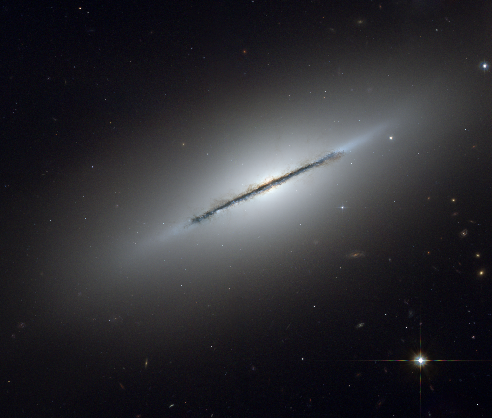

Галактики
Было время, когда люди считали, что Земля — центр Вселенной, вокруг которого вращаются все небесные тела. Сейчас мы знаем, что это совсем не так: наша Солнечная система всего лишь крошечная часть огромной галактики под названием Млечный Путь — колоссальной по земным меркам и одновременно с этим бесконечно маленькой на фоне бескрайней Вселенной.
Чтобы понять, насколько грандиозны галактические масштабы, достаточно привести небольшой пример. Диаметр Солнца в сто с лишним раз больше, чем диаметр Земли. Но по сравнению с размерами галактики это совершенно ничтожная цифра. Их соотношение примерно такое, как если бы мы сравнивали точку в конце этого предложения с целым континентом. А ведь галактик во Вселенной — неисчислимое множество, и они расположены не вплотную друг к другу. И все они такие разные…
На любой вкус и цвет
Эллиптические галактики, вопреки названию, не обязательно имеют форму эллипса. Их форма варьируется от вытянутой до практически круглой (на фото — NGC1404), а яркость постепенно уменьшается от центра к краям. В эллиптических галактиках практически нет главного строительного материала вселенной — газа и пыли, поэтому там не образуются новые звёзды. Такие галактики состоят преимущественно из красных и жёлтых гигантов и карликов, с редкими вкраплениями тусклых белых звёзд.
Спиральные галактики, в отличие от эллиптических, — «космический инкубатор» для звёзд. Особенно активно процесс звездообразования идёт в так называемых рукавах. Но старые звёзды в этих галактиках тоже есть. Часть из них находится в центре — в светящемся эллиптическом уплотнении под названием балдж. Другие распределены по всей площади сферического гало, окружающего балдж и рукава. У большинства наблюдаемых спиральных галактик есть исходящие из центра перемычки из ярких звёзд, называемые барами. Типичный пример — наш Млечный Путь. По мнению астрономов, бары стимулируют процесс звездообразования, пропуская через себя газ из спиральных ветвей. Со временем они исчезают, и галактика превращается в обычную спиральную.Спиральные галактики, в отличие от эллиптических, — «космический инкубатор» для звёзд. Особенно активно процесс звездообразования идёт в так называемых рукавах. Но старые звёзды в этих галактиках тоже есть. Часть из них находится в центре — в светящемся эллиптическом уплотнении под названием балдж. Другие распределены по всей площади сферического гало, окружающего балдж и рукава. У большинства наблюдаемых спиральных галактик есть исходящие из центра перемычки из ярких звёзд, называемые барами. Типичный пример — наш Млечный Путь. По мнению астрономов, бары стимулируют процесс звездообразования, пропуская через себя газ из спиральных ветвей. Со временем они исчезают, и галактика превращается в обычную спиральную.

Линзообразные галактики получаются из спиральных, когда те тратят или теряют большую часть своей межзвёздной материи. Такие галактики сочетают в себе особенности двух предыдущих. Так же, как и спиральные, они имеют форму диска, поэтому галактики этих двух типов бывает сложно различить. Однако, как и эллиптические, линзообразные галактики состоят преимущественно из старых звёзд. Новые в них образуются редко, поскольку межзвёздной материи на это уже не хватает.
Мир-кольцо
Привыкшие к строгому учёту и классификации астрономы долго недоумевали, когда обнаружили в созвездии Змеи образование Объект Хога. Дело в том, что у этой галактики в центре есть ядро из старых жёлтых звёзд, вокруг которого располагается кольцо абсолютно правильной формы из молодых голубых звёзд. Исследователи сперва предположили, что эти две части не связаны между собой, но потом придумали для объекта Хога отдельный класс кольцевых галактик. В котором он, кстати, не единственный представитель — если присмотреться, то на фото можно рассмотреть вдалеке ещё одну точно такую же галактику.
Космические хищники
Существует две основных гипотезы того, как образуются галактики. Согласно иерархической теории, галактики стали формироваться, когда звёзды, появившиеся после Большого Взрыва, начали собираться в скопления под действием гравитации. По мнению сторонников инфляционной теории, галактики и звёзды появились одновременно. Они постепенно формировались из неоднородностей, которые появились после Большого Взрыва. Впоследствии такие неоднородности преобразовались в газовые туманности, из которых и возникли галактики. Переходная стадия их формирования — протогалактики, гигантские облака межзвёздного газа, на 75% состоящие из водорода и ещё на 25% — из гелия. Сила гравитации воздействует на протогалактику несколько миллиардов лет, прежде чем из неё образуется полноценная галактика.
Насчёт эволюции галактик единого мнения нет. Но то, что на протяжении своей жизни они неоднократно меняются, уже не вызывает у астрономов сомнений. По одной версии, жизненный цикл начинается с бесформенных неправильных галактик с большими запасами необходимых строительных материалов — газа и пыли. Затем они преобразуются в спиральные. Когда процесс звездообразования становится всё менее интенсивным, спиральная галактика постепенно превращается в эллиптическую, пока не достигает идеальной сферической формы.
Вторая версия похожа на первую, только процесс идёт в другом направлении. Эллиптические галактики со временем сплющиваются до линзообразных, а те, в свою очередь, преобразуются в спиральные, затем начинают терять форму с прекращением звездообразования и в конце концов становятся неправильными.
Есть также версия, что галактики в принципе не эволюционируют, а изначально формируются такими, какие есть. В таком случае они меняют форму из-за взаимодействия друг с другом.
Между собой галактики взаимодействуют очень часто, поскольку все они непрерывно и довольно быстро движутся в разных направлениях и вдобавок имеют склонность к космическому каннибализму. Как правило, чем больше галактика, тем больше соседей она проглотила. Завидным аппетитом отличаются Туманность Андромеды и наш родной Млечный Путь, которые просто-напросто притягивают своих жертв за счёт мощной гравитации.
Если гигант столкнётся с карликом, то, скорее всего, от последнего останутся одни объедки — звёздные потоки, да перемычка на память в центре пожирателя, если он спиральный. Если полное поглощение не удастся, следы взаимодействия всё равно останутся: к примеру, неправильная форма Большого и Малого Магеллановых Облаков (спутников Млечного Пути) — заслуга нашей галактики.
Впрочем, друг друга упомянутые спиральные гиганты тоже притягивают: по расчётам учёных, через три миллиарда лет Млечный Путь и Туманность Андромеды столкнутся и сольются в огромную эллиптическую галактику. Аппетит нового космического образования при этом только удвоится — как показали наблюдения за галактикой Центавр А, «старички» тоже не против подкрепиться молодыми спиральными галактиками.